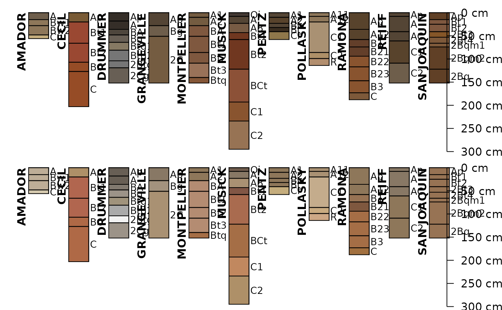
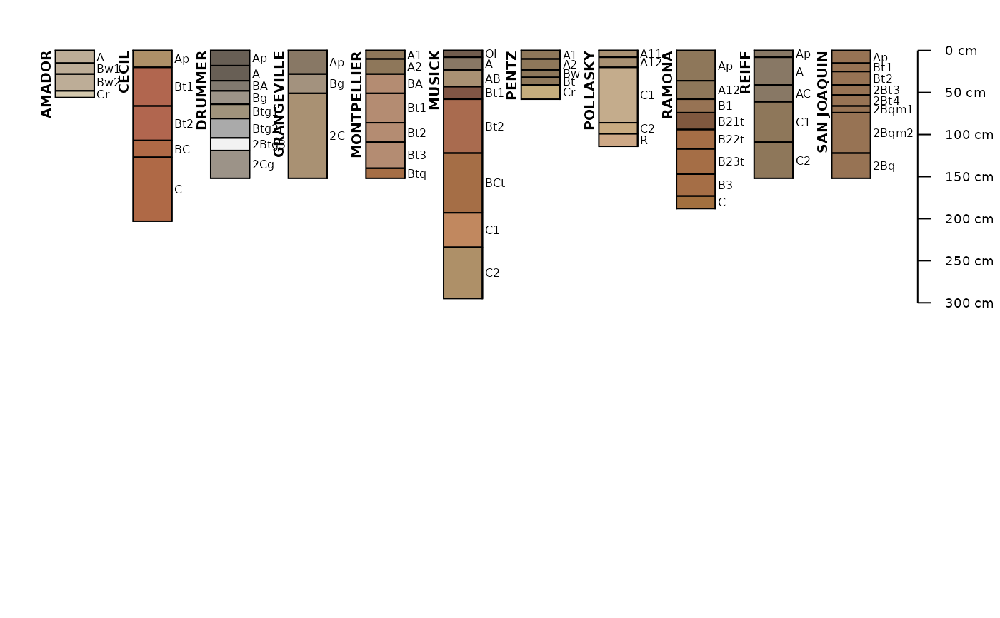

This function fetches a variety of data associated with named soil series, extracted from the USDA-NRCS Official Series Description text files and detailed soil survey (SSURGO). These data are updated quarterly and made available via SoilWeb. Set extended = TRUE and see the soilweb.metadata list element for information on when the source data were last updated.
Details
The standard set of "site" and "horizon" data are returned as aSoilProfileCollection object (extended = FALSE). The "extended" suite of summary data can be requested by setting extended = TRUE. The resulting object will be a list with the following elements:- SPC
SoilProfileCollectioncontaining standards "site" and "horizon" data- competing
competing soil series from the SC database snapshot
- geog_assoc_soils
geographically associated soils, extracted from named section in the OSD
- geomcomp
empirical probabilities for geomorphic component, derived from the current SSURGO snapshot
- hillpos
empirical probabilities for hillslope position, derived from the current SSURGO snapshot
- mtnpos
empirical probabilities for mountain slope position, derived from the current SSURGO snapshot
- terrace
empirical probabilities for river terrace position, derived from the current SSURGO snapshot
- flats
empirical probabilities for flat landscapes, derived from the current SSURGO snapshot
- shape_across
empirical probabilities for surface shape (across-slope) from the current SSURGO snapshot
- shape_down
empirical probabilities for surface shape (down-slope) from the current SSURGO snapshot
- pmkind
empirical probabilities for parent material kind, derived from the current SSURGO snapshot
- pmorigin
empirical probabilities for parent material origin, derived from the current SSURGO snapshot
- mlra
empirical MLRA membership values, derived from the current SSURGO snapshot
- ecoclassid
area cross-tabulation of ecoclassid by soil series name, derived from the current SSURGO snapshot, major components only
- climate
climate summaries from PRISM stack (CONUS only)
- NCCPI
select quantiles of NCCPI and Irrigated NCCPI, derived from the current SSURGO snapshot
- metadata
metadata associated with SoilWeb cached summaries
extended = TRUE, there are a couple of scenarios in which series morphology contained in SPC do not fully match records in the associated series summary tables (e.g. competing).- 1. A query for soil series that exist entirely outside of CONUS (e.g. PALAU).
- Climate summaries are empty
data.framesbecause these summaries are currently generated from PRISM. We are working on a solution that uses DAYMET.- 2. A query for data within CONUS, but OSD morphology missing due to parsing error (e.g. formatting, typos).
- Extended summaries are present but morphology missing from
SPC. A warning is issued.
Note
Requests to the SoilWeb API are split into batches of 100 series names from soils via makeChunks().
References
USDA-NRCS OSD search tools: https://soilseries.sc.egov.usda.gov/
Examples
# \donttest{
library(aqp)
# soils of interest
s.list <- c('musick', 'cecil', 'drummer', 'amador', 'pentz',
'reiff', 'san joaquin', 'montpellier', 'grangeville', 'pollasky', 'ramona')
# fetch and convert data into an SPC
s.moist <- fetchOSD(s.list, colorState='moist')
s.dry <- fetchOSD(s.list, colorState='dry')
# plot profiles
# moist soil colors
par(mar=c(0,0,0,0), mfrow=c(2,1))
plot(s.moist, name='hzname',
cex.names=0.85, depth.axis = list(line = -4))
plot(s.dry, name='hzname',
cex.names=0.85, depth.axis = list(line = -4))

# extended mode: return a list with SPC + summary tables
x <- fetchOSD(s.list, extended = TRUE, colorState = 'dry')
par(mar=c(0,0,1,1))
plot(x$SPC)
str(x, 1)
#> List of 18
#> $ SPC :Formal class 'SoilProfileCollection' [package "aqp"] with 8 slots
#> $ competing :'data.frame': 84 obs. of 3 variables:
#> $ geog_assoc_soils:'data.frame': 6 obs. of 2 variables:
#> $ geomcomp :'data.frame': 11 obs. of 9 variables:
#> $ hillpos :'data.frame': 11 obs. of 8 variables:
#> $ mtnpos :'data.frame': 1 obs. of 9 variables:
#> $ terrace :'data.frame': 9 obs. of 5 variables:
#> $ flats :'data.frame': 5 obs. of 7 variables:
#> $ shape_across :'data.frame': 11 obs. of 8 variables:
#> $ shape_down :'data.frame': 11 obs. of 8 variables:
#> $ pmkind :'data.frame': 19 obs. of 5 variables:
#> $ pmorigin :'data.frame': 33 obs. of 5 variables:
#> $ mlra :'data.frame': 11 obs. of 4 variables:
#> $ ecoclassid :'data.frame': 59 obs. of 5 variables:
#> $ climate.annual :'data.frame': 88 obs. of 12 variables:
#> $ climate.monthly :'data.frame': 264 obs. of 14 variables:
#> $ NCCPI :'data.frame': 11 obs. of 16 variables:
#> $ soilweb.metadata:'data.frame': 24 obs. of 2 variables:
# }
